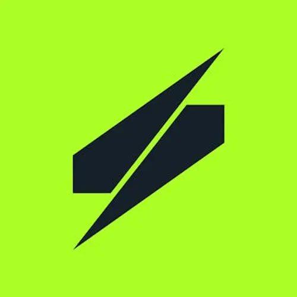
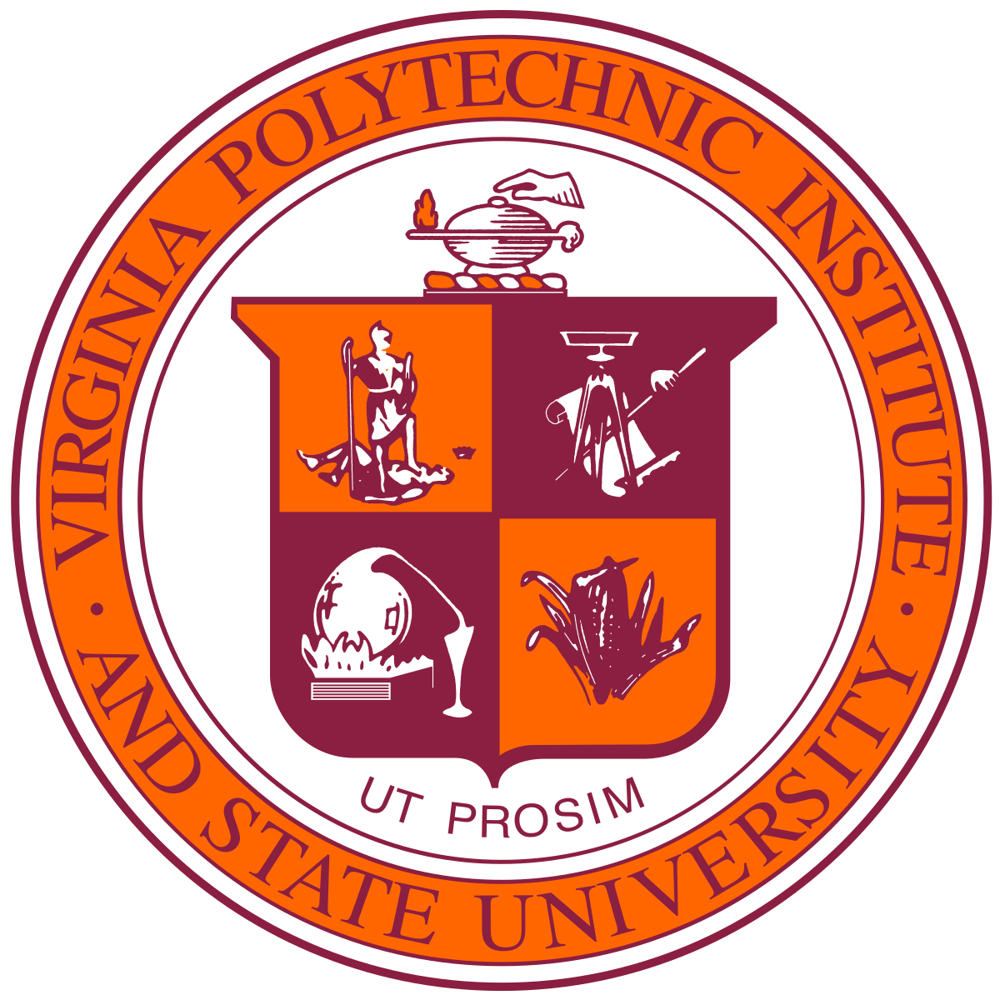
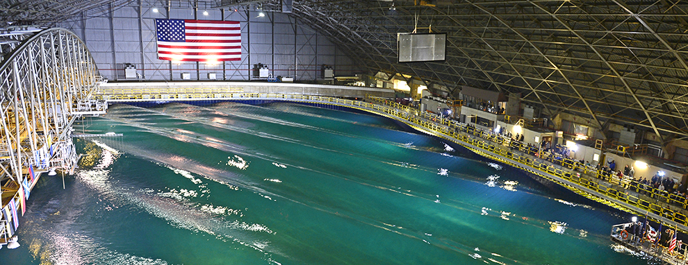
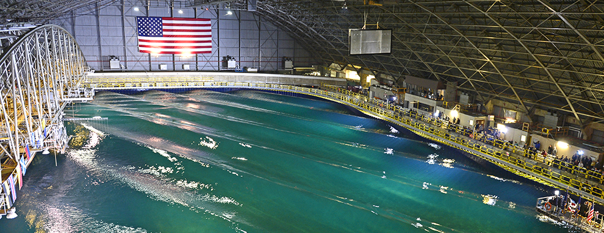
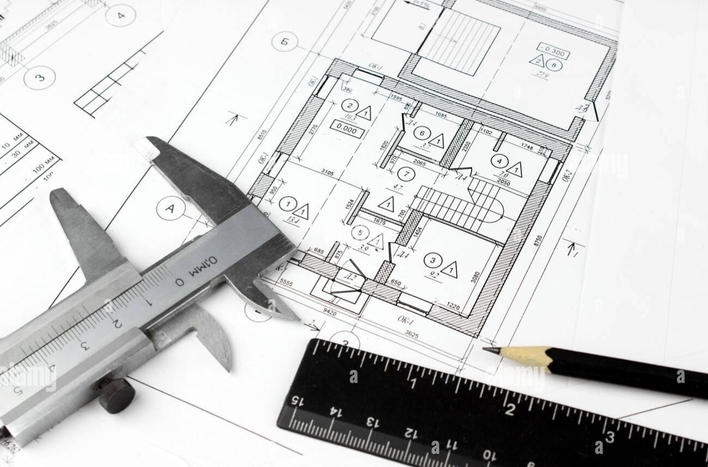
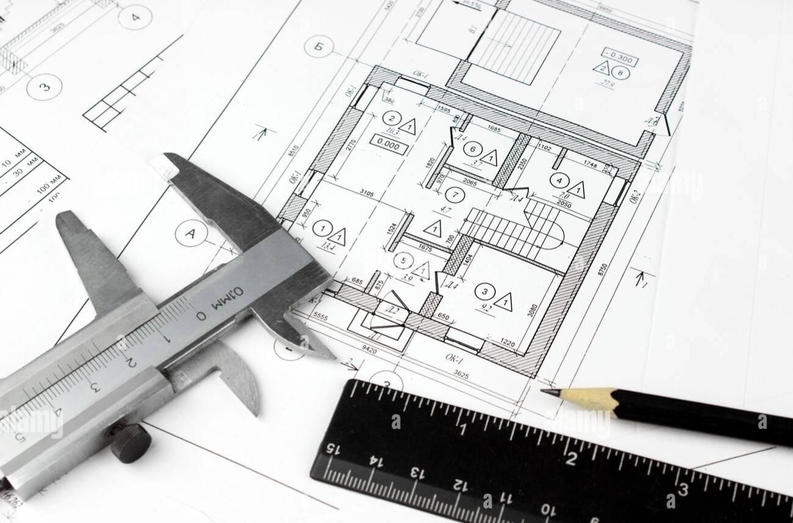

present

Currently preparing to join Saronic Technologies as a Senior Naval Architect starting February 2026 to support the development
of Autonomous Surface Vessels (ASVs).
2025 – present

I founded South Lakes Boat Co after designing and building my first boat, which
drew strong interest from fellow boating enthusiasts. My shop provides space-efficient,
affordable designs that make classic boating approachable to first-time boat builders.
To date, these designs have been purchased across 17 states and 8 countries, and were
highlighted in the Woody Boater blog, WoodenBoat Magazine, and Small Boats Magazine.
Skills: Design for Manufacturing, Prototyping, Systems Integration, 3D Modeling
Skills: Design for Manufacturing, Prototyping, Systems Integration, 3D Modeling
2021 – 2025
Worked as a Civilian Naval Architect for the Navy with NAVSEA’s Future Concepts and Design Integration Branch.
I specialized in ship concept design, systems integration, and 3D modelling.
I worked on a variety of projects areas including future concept design, pre-preliminary design, general arrangements,
data management, techincal report writing, and team leadership.
Skills: CAD, Navy Software, Excel, Systems Integration, Data Analysis, Concept Design, Presentations, Public Speaking
Skills: CAD, Navy Software, Excel, Systems Integration, Data Analysis, Concept Design, Presentations, Public Speaking
2025
2025
2023
Paper I co-authored was published in Nature science journal.
In this report we studied cicada wing expansion by tracking the hydraulic
processes of wing unfurling during the Brood X mass emergence in May 2021.
A promising area of study for new bio-inspired microfluidic devices and soft deployable robotics.
Skills: MATLAB, Data Analysis, Technical Writing, Communication
Skills: MATLAB, Data Analysis, Technical Writing, Communication
2017 – 2021

Bachelor of Science at Virginia Tech with a major in Ocean Engineering and minor in Naval Engineering with a focus on vehicle and system design.
During my undergraduate studies I joined the Human Powered Submarine design team and Dr. Jake Socha’s Biomechanics Lab. For Human Powered Submarine I gained hands-on experience with engineering projects including wet layups, CAD part design, and fabrication and gained valuable experience collaborating with other engineers. In Jake Socha's Biomechanics lab I built skills in data analysis, post-processing, and MATLAB script writing.
I also participated in undergraduate research with Dr. Christine Gilbert at Virginia Tech, where I worked as a volunteer in the Virginia Tech Hydroelasticity Lab and gained experience with experiment planning, public speaking, and LaTeX script writing.
During my undergraduate studies I joined the Human Powered Submarine design team and Dr. Jake Socha’s Biomechanics Lab. For Human Powered Submarine I gained hands-on experience with engineering projects including wet layups, CAD part design, and fabrication and gained valuable experience collaborating with other engineers. In Jake Socha's Biomechanics lab I built skills in data analysis, post-processing, and MATLAB script writing.
I also participated in undergraduate research with Dr. Christine Gilbert at Virginia Tech, where I worked as a volunteer in the Virginia Tech Hydroelasticity Lab and gained experience with experiment planning, public speaking, and LaTeX script writing.
2020
I was a Concept Design Intern at the Center for Innovation in Ship Design (CISD), where I worked on a launch and recovery future concept ship design.
I 3D Modeled the ship to meet International Maritime Organization stability standards and estimated ship resistance and fuel consumption.
Skills: Concept Design, Safety Standard Compliance, Public Speaking, Presentations

Skills: Concept Design, Safety Standard Compliance, Public Speaking, Presentations

2018
I was a Engineering Intern at Dominion Mechanical Conctractors Inc. I reviewed mechanical and architectural
drawings to identify change orders and reported findings to senior engineers.
Skills: Communication, Analysis

Skills: Communication, Analysis

Personal Projects
A non-extensive list of some of the personal projects I have worked on over the years.